Ear scratches, eyes closed.
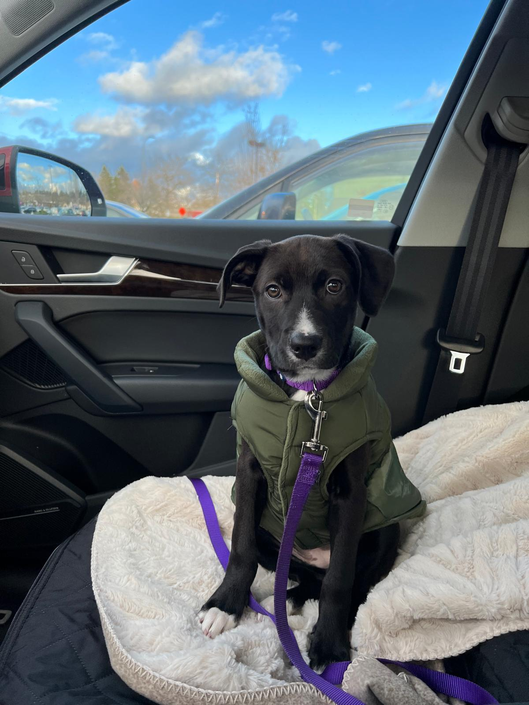
Day one energy: tiny vest, big eyes.
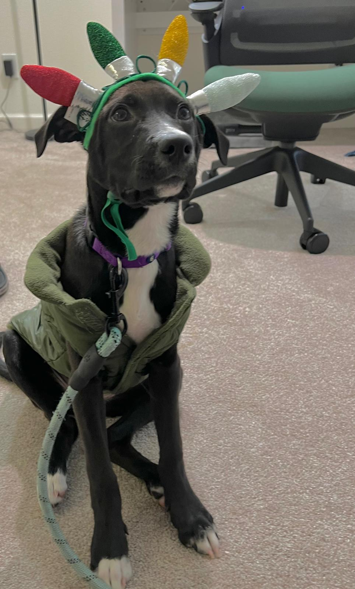
Festive, against his will.
Kitchen zoomies.
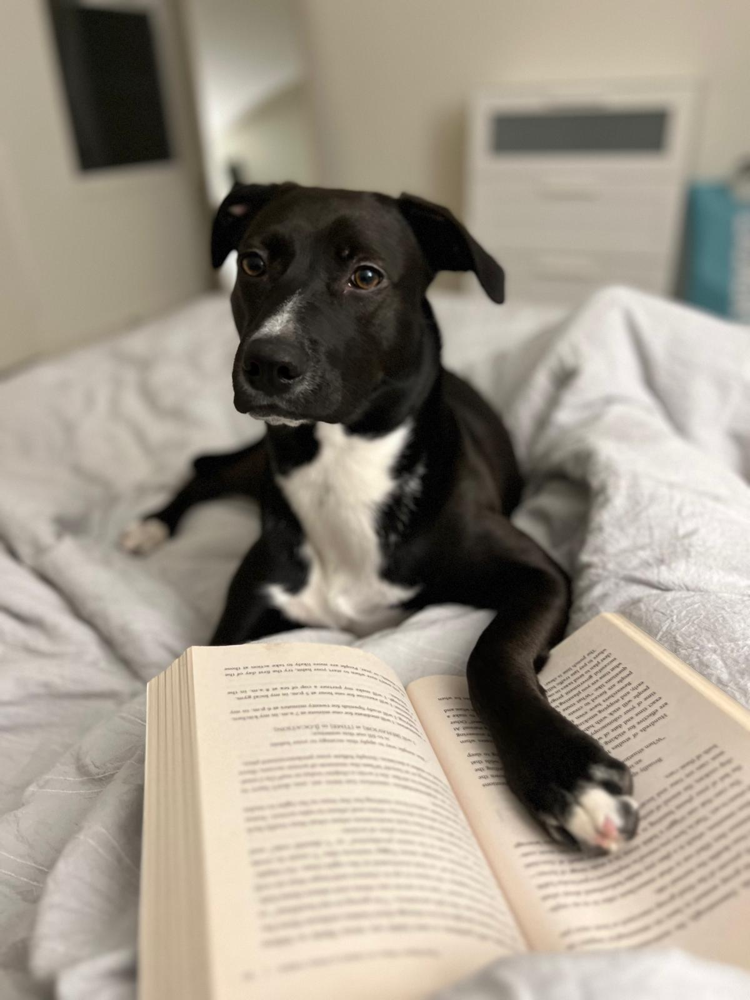
Light reading before bed.
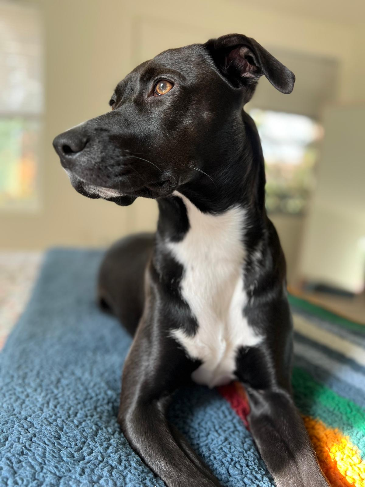
The distinguished profile.
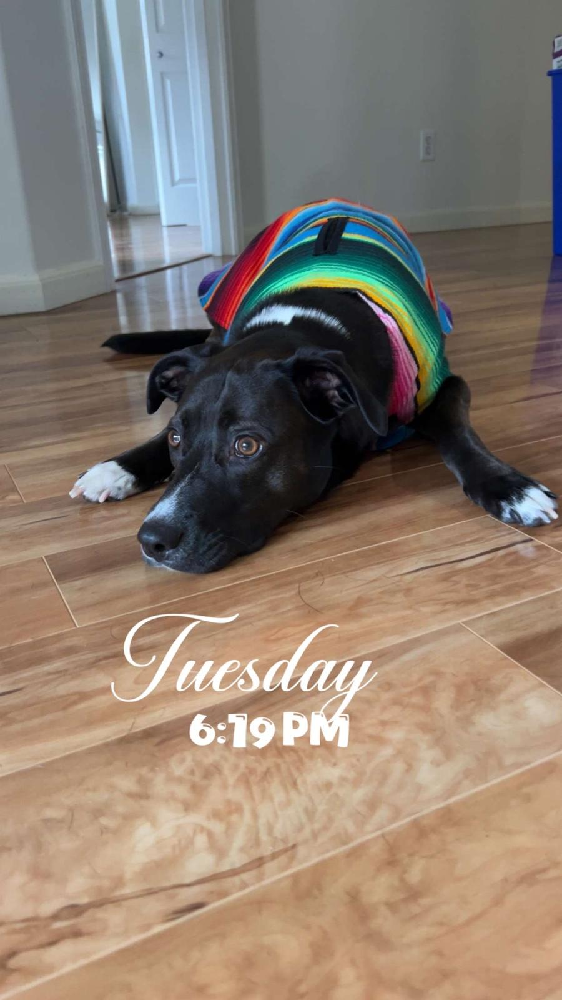
Serape season.
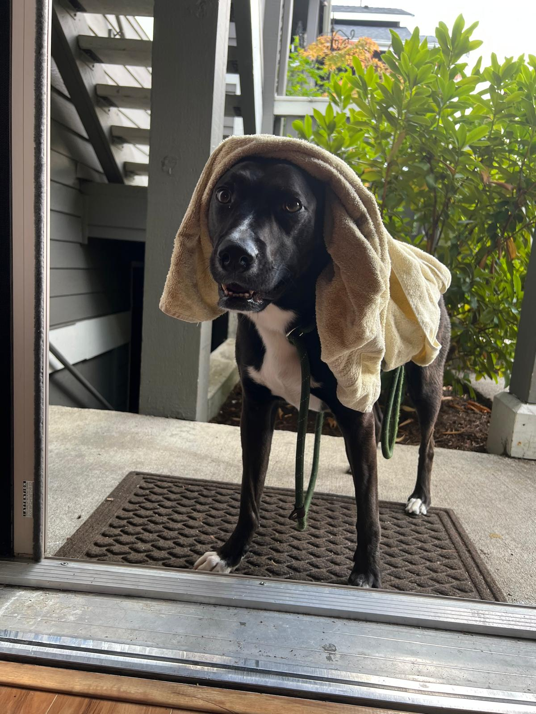
Rainy walk, royal treatment.
Out on patrol in the booties.
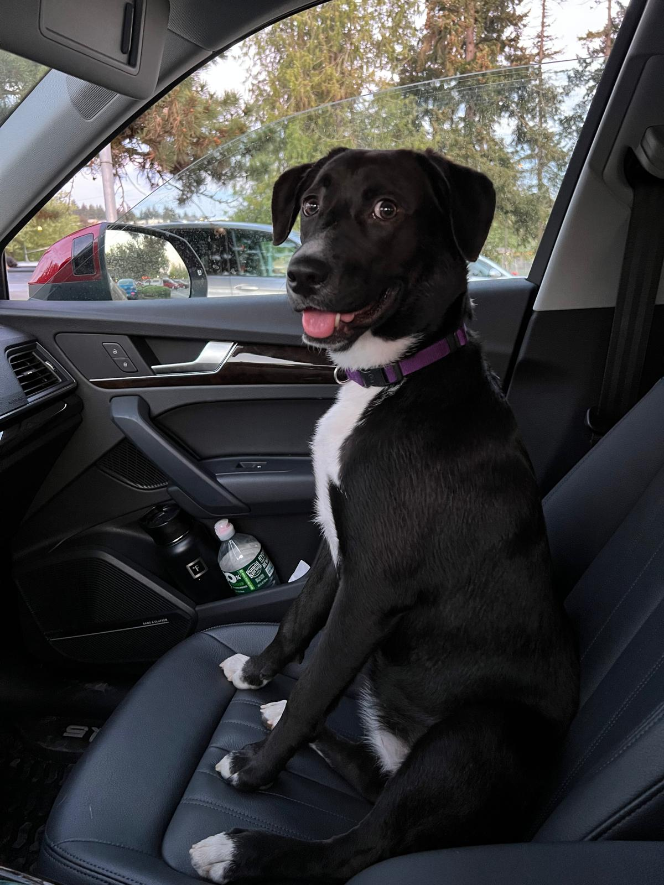
Still calls shotgun.
Beach excavation project.
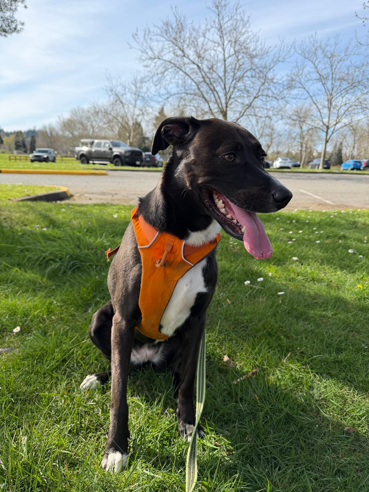
Sunny day, orange harness.
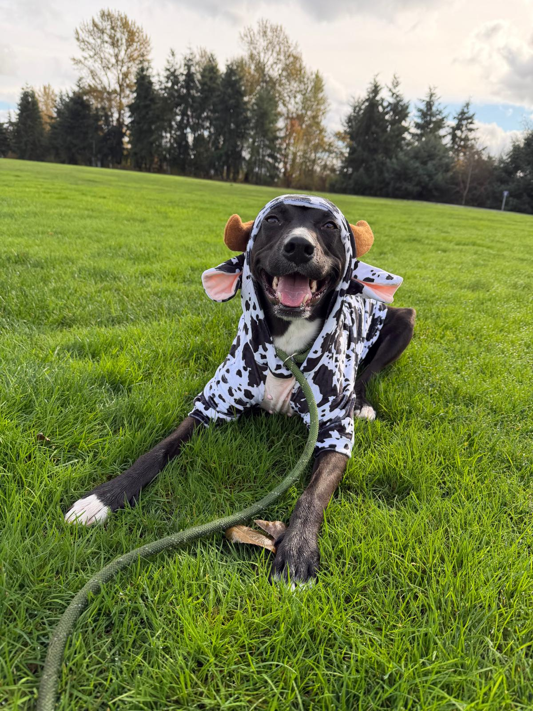
The happiest cow in the field.
Fetch, round forty-seven.
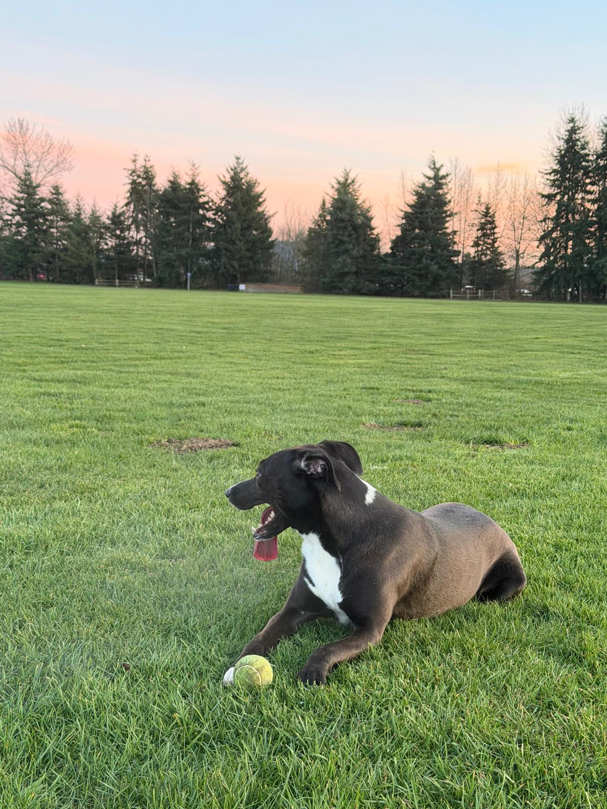
Golden hour with the ball.
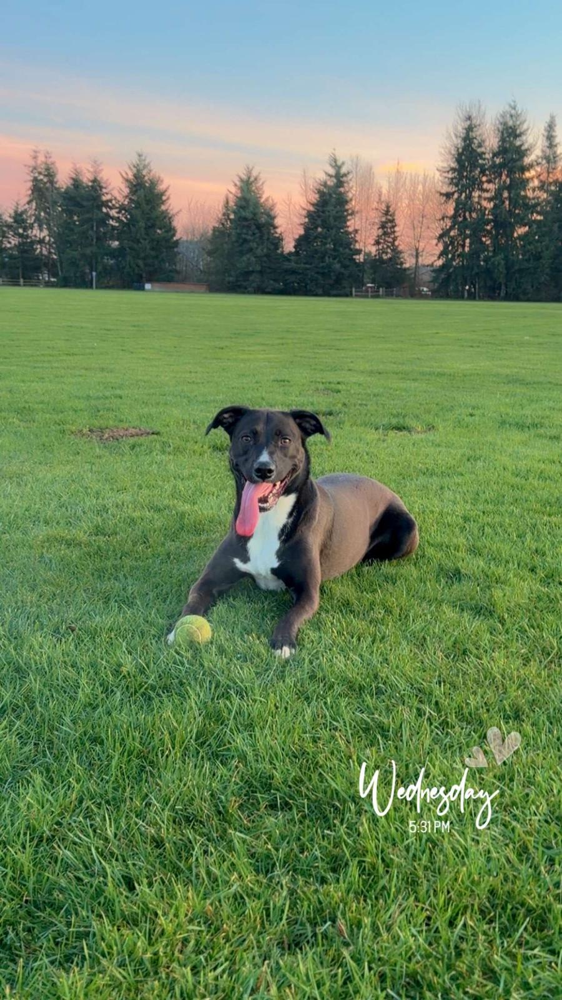
Tongue fully deployed.
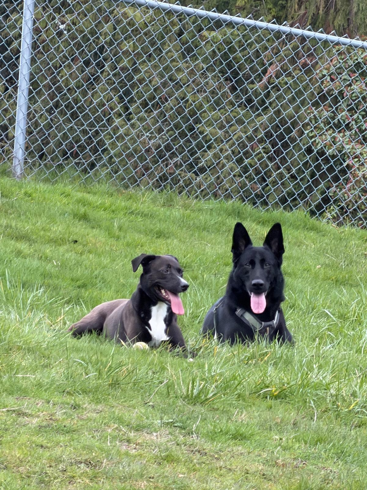
With a good friend.
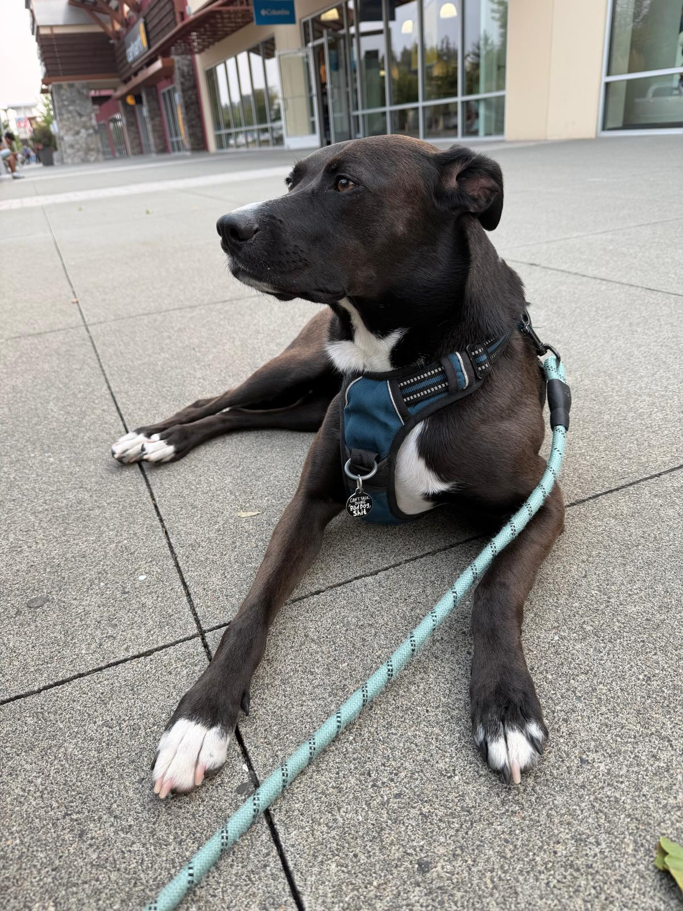
The tag says it all.
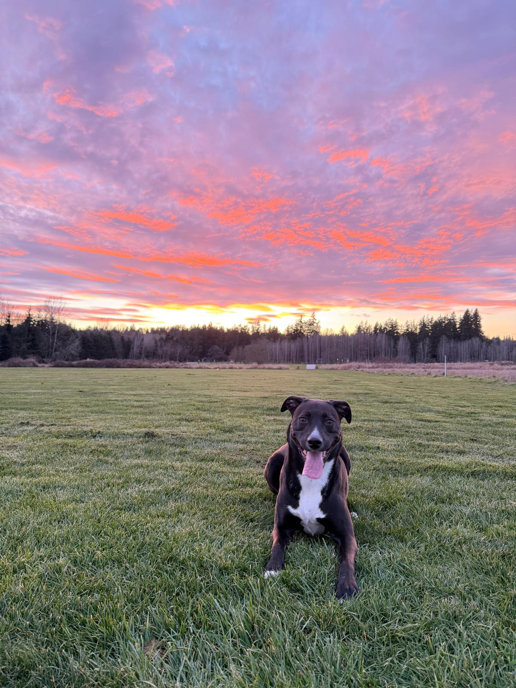
Front row seat to the sunset.
scroll ↓scroll →
♪ "Fluffing a Duck" — Kevin MacLeod, CC BY 4.0